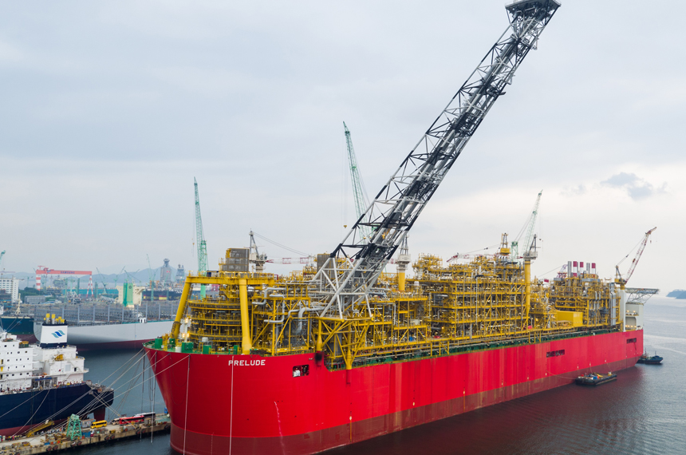
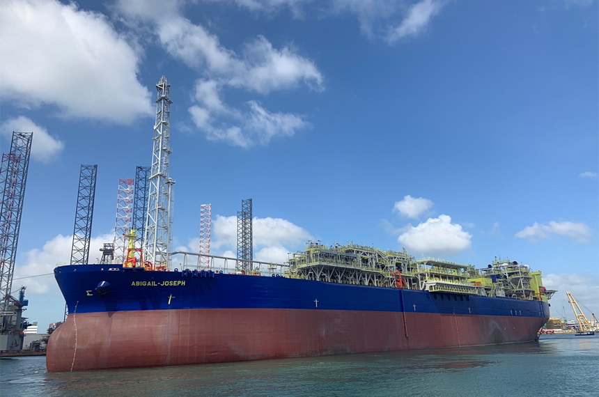
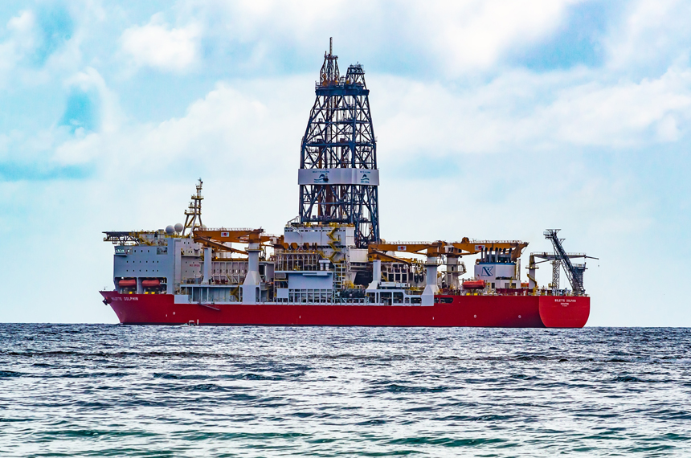
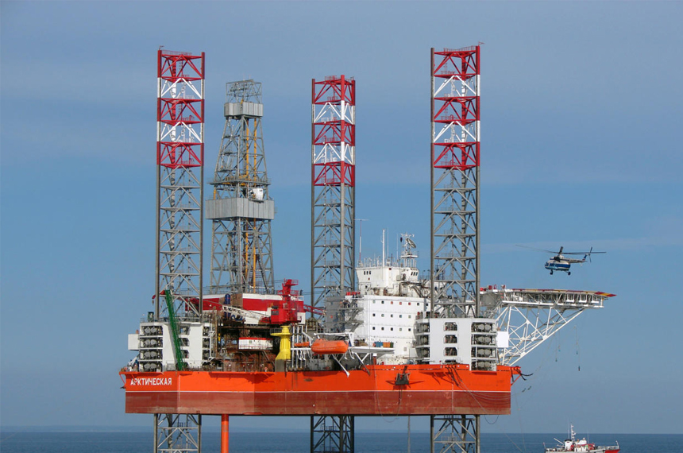
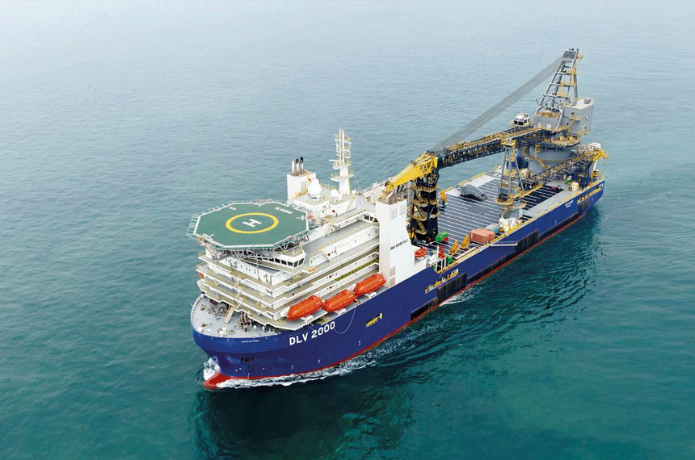

해양사업
개요
삼성중공업은 드릴십, FPSO 분야에서 세계 최다 건조실적을 보유하고 있습니다. 또한 고도의 안정성과 기술력을 필요로 하는 고정식 해양플랫폼, TLP, 부유식 해상구조물 등 해양개발설비 시장에서도 축적된 선박 건조 기술을 바탕으로 세계 주요 오일 메이저 기업들로부터 인정을 받고 있습니다.
특히 삼성중공업은 해상에서 LNG를 생산할 수 있는 FLNG와 같은 신시장 개척에 앞장서고 있습니다.
제품 소개
이전 탭 다음 탭-
FLNG
FLNG로 해양플랜트 설비시장 선점
-
부유식 해양구조물
고부가가치의 해양구조물 생산
기술력 축적 -
드릴십
드릴십 세계 시장점유율 1위
-
잭업리그
새로운 먹거리로 떠오른
고부가 시추설비 -
해양개발선
최고의 기술력으로 이뤄낸
해양개발선 건조